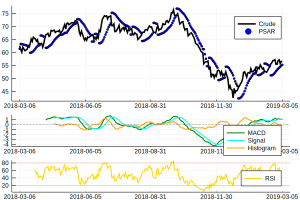

Momentum Indicators
Example
using Temporal, Indicators, Plots
X = quandl("CHRIS/CME_CL1", rows=252, sort='d')
x = cl(X)
x.fields[1] = :Crude
m = macd(x)
r = rsi(x)
p = psar(hl(X))
f1 = plot(x, linewidth=3, color=:black)
scatter!(p, color=:blue, markersize=2)
f2 = plot(m, linewidth=2, color=[:green :cyan :orange])
hline!([0.0], linestyle=:dash, color=:grey, label="")
f3 = plot(r, linewidth=2, color=:gold)
hline!([20, 80], linestyle=:dot, color=[:green, :red], label="")
plot(f1, f2, f3, layout=@layout[a{0.6h}; b{0.2h}; c{0.2h}])/home/travis/.julia/packages/GR/IVBgs/src/../deps/gr/bin/gksqt: error while loading shared libraries: libQt5Widgets.so.5: cannot open shared object file: No such file or directory
connect: Connection refused
GKS: can't connect to GKS socket application
Did you start 'gksqt'?
GKS: Open failed in routine OPEN_WS
GKS: GKS not in proper state. GKS must be either in the state WSOP or WSAC in routine ACTIVATE_WS
Reference
Indicators.adx — Method.adx(hlc::Array{Float64}; n::Int64=14, wilder=true)::Array{Float64}Average directional index
Output
- Column 1: DI+
- Column 2: DI-
- Column 3: ADX
Indicators.aroon — Method.aroon(hl::Array{Float64,2}; n::Int64=25)::Array{Float64}Aroon up/down/oscillator
Output
- Column 1: Aroon Up
- Column 2: Aroon Down
- Column 3: Aroon Oscillator
Indicators.cci — Method.cci(hlc::Array{Float64,2}; n::Int64=20, c::Float64=0.015, ma::Function=sma)::Array{Float64}Commodity channel index
Indicators.donch — Method.donch(hl::Array{Float64,2}; n::Int64=10, inclusive::Bool=true)::Array{Float64}Donchian channel (if inclusive is set to true, will include current bar in calculations.)
Output
- Column 1: Lowest low of last
nperiods - Column 2: Average of highest high and lowest low of last
nperiods - Column 3: Highest high of last
nperiods
Indicators.kst — Method.kst(x::Array{Float64};
nroc::Array{Int64}=[10,15,20,30], navg::Array{Int64}=[10,10,10,15],
wgts::Array{Int64}=collect(1:length(nroc)), ma::Function=sma)::Array{Float64}
KST (Know Sure Thing) – smoothed and summed rates of change
Indicators.macd — Method.macd(x::Array{Float64}; nfast::Int64=12, nslow::Int64=26, nsig::Int64=9)::Array{Float64}Moving average convergence-divergence
Output
- Column 1: MACD
- Column 2: MACD Signal Line
- Column 3: MACD Histogram
Indicators.momentum — Method.momentum(x::Array{Float64}; n::Int64=1)::Array{Float64}Momentum indicator (price now vs price n periods back)
Indicators.psar — Method.psar(hl::Array{Float64}; af_min::Float64=0.02, af_max::Float64=0.2, af_inc::Float64=af_min)::Array{Float64}Parabolic stop and reverse (SAR)
Arguments
hl: 2D array of high and low prices in first and second columns respectivelyaf_min: starting/initial value for acceleration factoraf_max: maximum acceleration factor (accel factor capped at this value)af_inc: increment to the acceleration factor (speed of increase in accel factor)
Indicators.roc — Method.roc(x::Array{Float64}; n::Int64=1)::Array{Float64}Rate of change indicator (percent change between i'th observation and (i-n)'th observation)
Indicators.rsi — Method.rsi(x::Array{Float64}; n::Int64=14, ma::Function=ema, args...)::Array{Float64}Relative strength index
Indicators.smi — Method.smi(hlc::Array{Float64,2}; n::Int64=13, nFast::Int64=2, nSlow::Int64=25, nSig::Int64=9,
maFast::Function=ema, maSlow::Function=ema, maSig::Function=sma)::Matrix{Float64}SMI (stochastic momentum oscillator)
Indicators.stoch — Method.stoch(hlc::Array{Float64,2}; nK::Int64=14, nD::Int64=3, kind::Symbol=:fast, ma::Function=sma, args...)::Matrix{Float64}Stochastic oscillator (fast or slow)
Indicators.wpr — Method.wpr(hlc::Array{Float64,2}, n::Int64=14)::Array{Float64}Williams %R